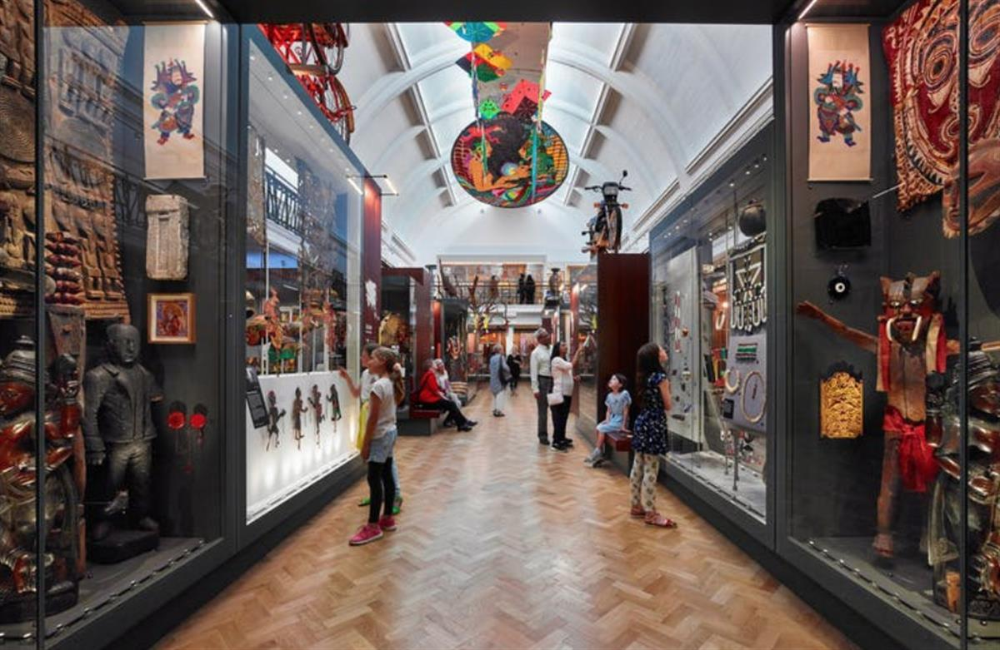
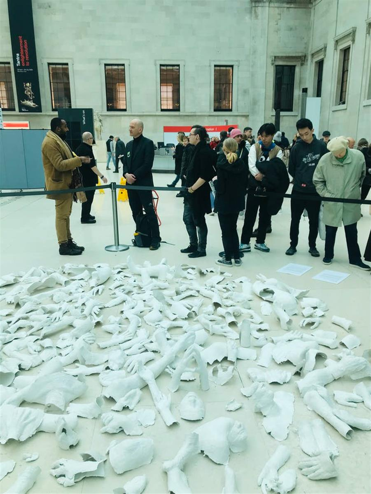
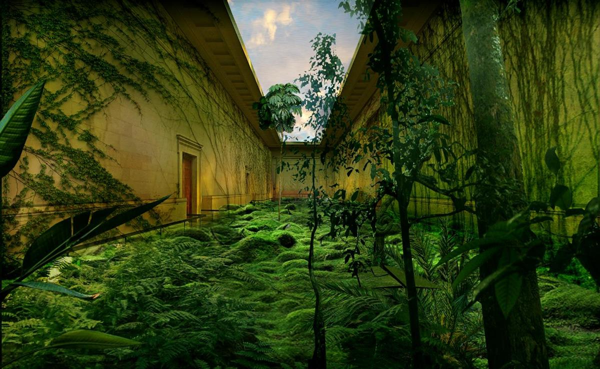
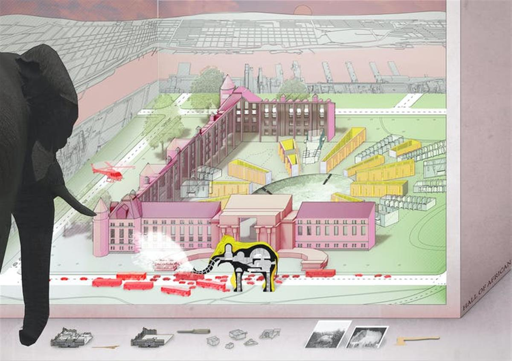
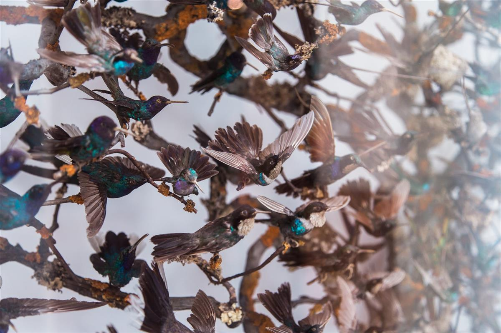
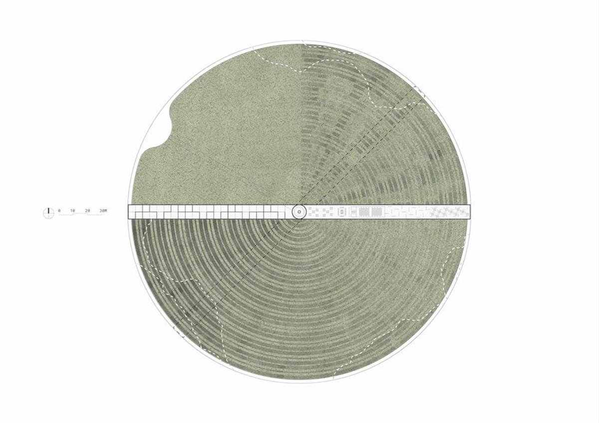
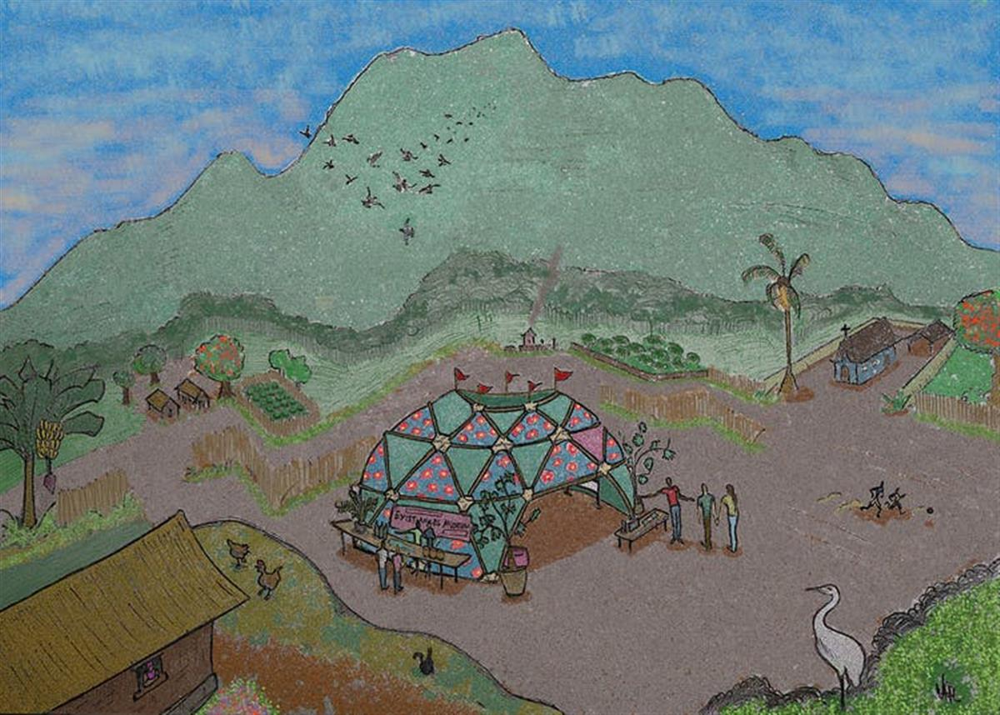

The Gallery of Ecological Art (formerly China gallery) at the British Museum of Decolonised Nature. Image courtesy John Zhang and Studio JZ, Author provided
The Gallery of Ecological Art (formerly China gallery) at the British Museum of Decolonised Nature. Image courtesy John Zhang and Studio JZ, Author provided
Authors
Colin Sterling AHRC Research Fellow, Institute of Archaeology, UCL
Rodney Harrison Professor of Heritage Studies, UCL
Climate crisis: how museums could inspire radical action
November 18, 2020 1.15pm GMT
When Victorian tea-merchant Frederick Horniman was looking to build a new home for his extensive collection of natural and cultural artefacts, his own back garden offered the perfect spot. Situated on one of the highest points in London, Surrey Mount – the Horniman family home – enjoyed commanding views across the city. The surrounding area of Forest Hill was a thriving suburb, and Horniman sought to “bring the world” to this growing community by making his collection accessible to everyone.
Architect Charles Harrison Townsend was commissioned to design the new museum, which opened in 1901. Soon afterwards, Horniman presented the museum and 15 acres of gardens to the London County Council as a gift in perpetuity for the “recreation, instruction and enjoyment” of the people of London.
Like many museums around the world, the Horniman was forced to close temporarily in March 2020 to help stop the spread of COVID-19. The gardens remained open throughout lockdown, taking on a vital role for the local community during this period of forced isolation. The sloping lawn where Surrey Mount once stood became an impromptu gathering place to watch the sun set across the city’s now empty skyscrapers.
It was around this time that the museum was added to a crowd-sourced map of statues, monuments, named buildings and streets to “shine a light on the continued adoration of colonial icons and symbols”. Although known as a philanthropist and social reformer in Britain, Horniman’s wealth, like that of many of the founder’s of Britain’s museums, was acquired through colonial exploitation – in his case, the tea trade.
As the museum’s Chief Executive Nick Merriman noted in an article written in the wake of the Black Lives Matter protests, tea growing was “labour intensive, poorly compensated and, in many cases, used indentured or forced labour”. Similarly, its collections include objects such as a number of Benin Bronzes, which were obtained through colonial violence.

The Horniman Museum’s World Gallery. © Andrew LeeIn many ways this is a familiar story. The emergence of the public museum in the 18th and 19th centuries cannot be disentangled from painful histories of colonial subjugation and exploitation. While Horniman’s desire to bring the world to south London may have been enacted in a spirit of education and social “improvement”, the very idea of building a museum to collect, order and display the world speaks to a broader mindset of western dominion over other cultures – and nature.
As many scholars have shown, hierarchical notions of race and culture developed and perpetuated by museums underpinned violent practices around the globe and continue to do so today. They also supported a vision of European exceptionalism that helped to justify a harmful relationship with the natural world, encouraging ideals of progress and exploitative understandings of nature as a resource.
This attitude has been challenged repeatedly as part of anti-racist, anti-colonial and pro-environmental institutional reform. Now, in the shadow of a climate and ecological emergency that is impacting on all areas of social, political and economic life, the very purpose of museums is again being called into question.
Reimagining museums
While the Horniman may be an archetypal museum in many respects, it also contains a few surprises. Alongside galleries dedicated to natural history, anthropology and musical instruments, visitors can explore a butterfly house, a small animal park, and an aquarium that is home to an innovative research project exploring coral reef reproduction.
This unusual combination of natural and cultural collections, outdoor spaces and zoological research was highlighted in the museum’s climate and ecology manifesto, published in January 2020. As well as plans to minimise waste, reduce pollution and invest in environmental research, the manifesto calls for a suite of changes related to the collections, the site and the organisation. It makes clear that while museums may be “institutions of the long term”, they have a “moral and ethical imperative to act now” in the fight against global warming.
The sunken garden at the Horniman Museum, south east London. Dominic Lipinski/PA Archive/PA Images
From Anchorage to Sydney, this call to action has resonated across the sector in recent years. While the scale and urgency of climate change can often seem overwhelming, museums are beginning to recognise that they have a crucial role to play in shaping and supporting society’s response to this crisis. Just as the Horniman gardens became a restorative meeting space during lockdown, the purpose of museums more broadly is ripe for reimagining in the era of climate change.
But what might this look like? Earlier in 2020 we launched an international design and ideas competition to gather responses to this question. Over 250 submissions were received from 48 countries, with proposals from architects, designers, activists, artists, student groups, academics, indigenous communities and those already working in museums globally.
The brief was purposefully expansive: against the backdrop of a rapidly changing environment, what would it mean for museums to actively shape a more just and sustainable future for all?
Practical solutions and speculative concepts were equally welcome. While some responded with proposals to create more sustainable museum buildings, or develop new exhibitions on climate change, others sought to redefine the very foundations of museological thinking and practice. The eight finalists are currently developing their ideas for an exhibition at Glasgow Science Centre ahead of the 26th UN Climate Change Conference COP26, which will take place in Glasgow in November 2021.
A historical reckoning
For some museums, looking to the future in this way will mean confronting their own complicity in many of the forces that have brought the planet to the brink of ecological collapse.
The term museum now embraces a dizzying variety of buildings, projects, ideas and experiences. But their roots can be traced to the princely palaces and cabinets of curiosity of the 17th century – spaces in which powerful individuals assembled and displayed their most notable possessions.
In Britain, Sir Hans Sloane’s collection – one of the largest in the country when he died in 1753 – included “curiosities” and natural specimens from North and South America, the East Indies and the West Indies. Sloane – who was born in Ireland in 1660 and found fame as a physician to the aristocracy – acquired the wealth to build his collection from enslaved labour on Jamaican sugar plantations. Sloane’s collection provided the foundation for the British Museum and the Natural History Museum, a legacy that both institutions are now beginning to grapple with.
Most recently, in August 2020, the British Museum announced that it had moved a bust of Sloane to a new display case, where it could be reinterpreted alongside artefacts related to the British empire. While many museums are increasingly willing to acknowledge the many ways in which their own histories are bound up with ongoing debates around race and inequality, drawing threads between these injustices and the problem of climate change has yet to become common. Instead, it regularly falls to outside voices to make these connections clear.

BP or not BP?’s ‘Monument’, installed at the British Museum overnight during their occupation of the museum on February 9 2020. © Rodney Harrison, Author provided
The work of activist group BP or Not BP? is a case in point here. Known for their highly theatrical protests, BP or Not BP? occupied the British Museum for three days in February, taking over galleries and creating a new sculptural artwork in the museum’s Great Court, partially supported by staff and at least one member of the museum’s board. They sought to shine a spotlight on the impact of BP around the world, drawing attention to the different ways in which “the museum’s own history and that of its sponsor were born out of colonialism and empire”.
Moving statues and reinterpreting collections can only go so far in this respect. As BP or Not BP? argue, reimagining what a “truly enlightened, responsible and engaged British Museum could look like” will require radical, systemic change.
Architect John Zhang’s proposal for our competition - titled The British Museum of Decolonized Nature - offers one vision of what such change might look like. With the museum emptied of its colonial artefacts, Zhang imagines nature taking over. This is not a dystopian wasteland, but a purposefully programmed set of experiences where “we may see our relationship with nature anew”.
Taking up the challenge of what it would mean to transform existing museums into spaces of social and climate justice, Zhang proposes turning the British Museum’s Great Court into an open forum for public debate on climate action. While such ideas may seem fantastical, BP or Not BP?’s intervention shows how this work is, in many senses, already underway.

The British Museum of Decolonized Nature. © John Zhang, Author providedCollecting worlds, making futures
While not all museums are burdened by the same colonial roots as the British Museum, the central premise of amassing natural and cultural objects to tell a particular story has shaped the way societies globally now understand their place in the world. In many instances, this has meant supporting, justifying and perpetuating certain ways of living that may have disastrous consequences for the environment.
In the early 20th century, the American Museum of Natural History sponsored a number of excursions to Africa to capture and kill animals for a series of new dioramas. The creatures – including lions, giraffes, elephants and gorillas – were stuffed and mounted to encourage their preservation “in the wild”. This led to the establishment of one of the first protected areas in Africa, Albert National Park in the eastern Congo, named after the King of Belgium. The park, which is now a UNESCO World Heritage Site, was renamed Virunga in 1969.
As recent studies have shown, such protected areas can create an unhelpful divide between local communities and the lands they inhabit. Indigenous voices and alternative systems of land management are often marginalised in this approach, which extends the frozen world of the museum diorama to living ecosystems. Both are symptomatic of a modern attitude towards the environment that represents a significant obstacle to meaningful climate action.
In their response to the competition brief, experimental spatial practice Design Earth concocted a playful yet provocative antidote to this situation – a magical realist story accompanied by speculative design drawings.
“Elephant in the Room” asks what would happen if one of the creatures shot by celebrated “conservationist” Teddy Roosevelt and subsequently mounted in the Hall of African Mammals at the American Museum of Natural History came to life and demanded justice. As the elephant rampages through the museum and out into the streets of New York, its belly “echoes with resonant demands to decolonise the museum” and “divest from carbon industries”. The museum itself becomes an architectural taxidermy, with only its facade remaining.

Elephant in the Room. © Design Earth, Author providedThis striking image upends the familiar hierarchies of the museum. Stasis and order give way to chaos – but of a regenerative kind – with the elephant standing in for the Earth itself. The idea that humans exercise any kind of “mastery” over nature was always an illusion. Museums – “those symbols of elitism and staid immobility” as anthropologist James Clifford once put it – have helped to reinforce this view of the world for too long.
Reimagining museums as pillars in the fight against climate change means more than just paying lip service to issues of sustainability, recycling and carbon emissions (important as these are). It means a historical reckoning with the role museums have played in supporting the main drivers of climate breakdown – not least colonialism, capitalism (at least as we currently know it), and industrial modernity.
Climate action from this perspective is wrapped up with calls for social justice and racial equality. Museums have emerged as a key battleground in these wider debates, and it is crucial that we begin to connect the dots between the intersecting legacies of colonialism and climate change.
Museums and climate action
Climate action typically refers to a suite of activities that either look to reduce greenhouse gas emissions or enhance the way societies globally can adapt to the worst effects of climate change.
The 2015 Paris Agreement aims to ensure global average temperatures do not rise more than 2°C above pre-industrial levels. Current policies put the world on track for warming of around 3°C. As the journalist David Wallace-Wells writes in his searing book The Uninhabitable Earth, such a catastrophic rise would no doubt “shape everything we do on the planet, from agriculture to human migration to business and mental health”.

Stuffed songbirds. Bruno Martins/Unsplash, CC BY-SAWhile museums around the world have implemented programmes of climate change education and pushed for more environmentally friendly practices, far less attention has been paid to building resilience or adapting to a rapidly changing climate. This echoes broader work across the heritage sector. As a recent report on climate action from the International Council on Monuments and Sites highlights, questions of adaptation and resilience in heritage tend to focus on learning from the past to guide contemporary planning.
The profound challenge of the climate emergency forces us to think more radically about what museums could and should be. What would a museum dedicated to meaningful climate action look like? How would it operate? Who would it serve, and what stories would it tell?
Despite a general claim to be working in the interests of “future generations”, museums and the heritage sector more broadly rarely consider the future in specific terms. Instead, present conditions and attitudes are simply projected into the future, as if change is something to be fought against rather than embraced. As a recent research project led by one of us concluded, there is an urgent need for more speculative and creative thinking in the field to confront the inevitable social and environmental transformations climate change will bring.
This was very much in the back of our minds when we were developing the competition. Alongside new initiatives such as the New York City based Climate Museum and Climate Museum UK, which aim to address the climate crisis directly, we hoped the brief might encourage applicants to consider climate resilience and adaptation in broader terms, or ask how a changing climate might prompt new ways of living with the Earth. In short, we invited submissions that might consider not only how we survive, but how we might thrive in the climate change era.
Living well in a warming world
Several of the proposals did just that. Weathering With Us, submitted by Singapore-based architects Isabella Ong and Tan Wen Jun, imagines a new kind of contemplative museum space where climate action is materialised in the very structure and experience of the building.
Their dreamlike concept – a huge floating barge situated where the equator intersects with the prime meridian at 0’ latitude and 0’ longitude – takes the form of a mandala sand sculpture made of olivine, a material which naturally pulls carbon dioxide from the atmosphere and redeposits it as carbon in the skeletons of marine creatures and shells in the ocean.
Our collective understanding of climate change is often represented by a doomsday clock. The museum put forward by Weathering With Us asks what would happen if “we have a shared emblem that functions not as a harbinger of doom, but of healing?”

Weathering With Us. © Isabella Ong and Tan Wen Jun, Author providedIf the monumental scale of Weathering With Us shows how the design of new museum buildings might rise to the challenge of climate action, other proposals gestured towards the practical work that museums perform in the world. In particular, a key theme running through many submissions was the possibility for museums to support new ways of living with and relating to the Earth.
Estimates on the number of museums in the world range from 55,000 to 95,000. The sheer diversity of the field is a reminder both of the malleability of the term “museum”, and of the globalised reach of an idea that has its roots in European colonialism and capitalist exploitation.
Existances - a project developed by a group of Brazilian academics and museum workers - simultaneously challenges these roots and asks “how we might live well” in the Anthropocene. Highlighting the power of collective knowledge in the fight against climate change, Existances (a neologism produced by bringing together the words “existence” and “resistance”) imagines a network of micro-museums embedded in and responding to the diverse cosmologies of Afro-Brasilian, Amerindian and rural communities. While acknowledging the severity of the climate emergency for such communities, this is a project of hope – one that challenges us to think and act together to imagine alternative ways of being in the world.

Existances. © Jairza Fernandes Rocha da Silva, Luciana Menezes de Carvalho, Nayhara J. A. Pereira Thiers Vieira, João Francisco Vitório Rodrigues, Natalino Neves da Silva & Walter Francisco Figueiredo Lowande, Author providedWithout denying the scale of this task, a few key themes emerged in response to the competition that suggest what shape this reorientation might take.
The first relates to breaking down boundaries and moving away from authoritarian values of order and control. In an inevitably transforming future world, museums must accept and embrace the creative possibilities of uncertainty and change rather than work against these forces.
This will also mean reimagining the familiar structure of museums. Instead of centralised spaces and buildings, many of the proposals submitted to the competition called for non-hierarchical “networks” enabling a decentralised approach to collecting, education and research.
This would require a fundamental rethink of the way museums are typically governed - the third and perhaps most important theme to emerge across the competition entries. Certain crises demand new forms of decision making where experts and lay people can come together to imagine new futures.
It’s clear that 2020 has been a tumultuous year for museums. The pandemic has forced many around the world to close, and each week brings news of further staff redundancies. In the UK, museums have been drawn into a manufactured culture war with threats from the government that those institutions which remove statues or other contested objects from display risk losing their public funding. On top of all this, a battle has raged within the international museums sector over what the term “museum” even means. To say this is a sector in flux would be an understatement.
Museums will not solve the complex problem of climate change, but they might set a powerful example for how this work can unfold across society over the coming years. The ideas generated in response to our competition show how vibrant, collective and transformative museums could be. The climate crisis brings with it a sense of inevitable change, of things unravelling, but how society responds to this change is far from certain. An expanded notion of climate action is required, one that focuses on environmental justice, racial, social and economic inequalities and - perhaps most radically - new forms of living with the Earth.
As the Horniman proves, in dealing with complex legacies and ongoing injustices, museums have already become testing grounds for localised action on a broad range of social, political and economic issues. The position they take with regards to climate action could resonate far beyond the field.
SOURCE: THE CONVERSATION